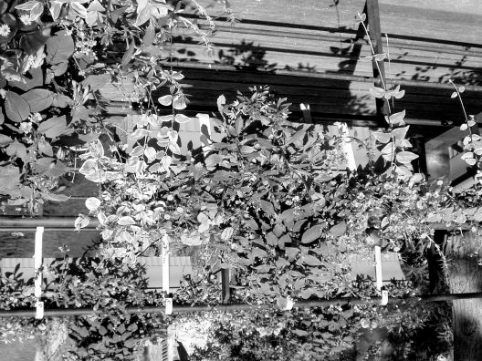
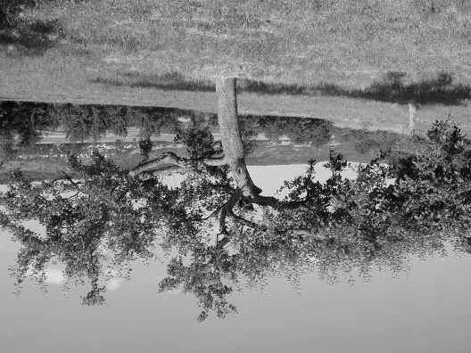
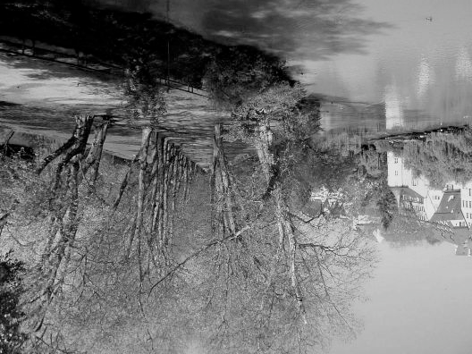
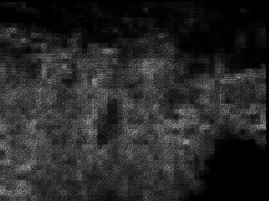
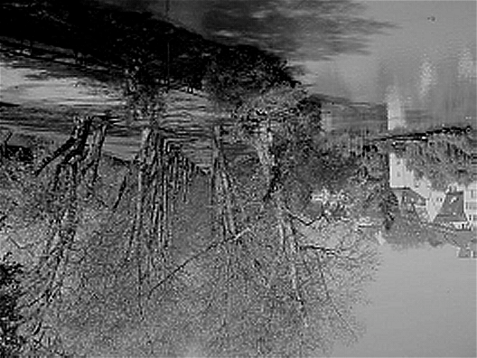
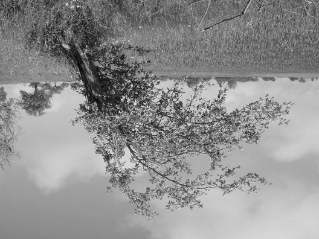
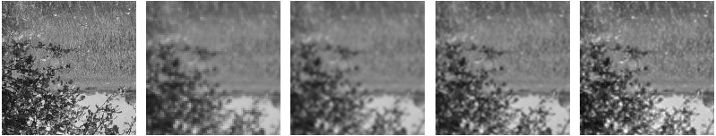
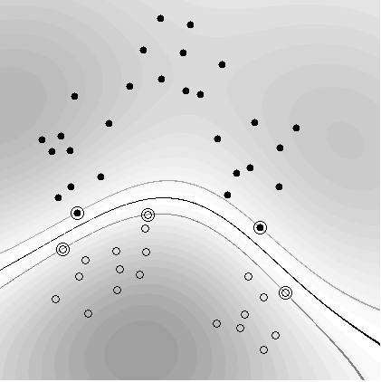

Kernel Methods
Bernhard Sch¨
olkopf
Max Planck Institute for Biological Cybernetics
B. Sch¨olkopf, Cambridge, 2009


Roadmap
• Similarity, kernels, feature spaces
• Positive definite kernels and their RKHS
• Kernel means, representer theorem
• Support Vector Machines
B. Sch¨olkopf, Cambridge, 2009


Learning and Similarity: some Informal Thoughts
• input/output sets X, Y
• training set (x1, y1), . . . , (xm, ym) ∈ X × Y
• “generalization”: given a previously unseen x ∈ X, find a suit-
able y ∈ Y
• (x, y) should be “similar” to (x1, y1), . . . , (xm, ym)
• how to measure similarity?
– for outputs: loss function (e.g., for Y = {±1}, zero-one loss)
– for inputs: kernel
B. Sch¨olkopf, Cambridge, 2009


Similarity of Inputs
• symmetric function
k : X × X → R
(x, x$) %→ k(x, x$)
• for example, if X = RN: canonical dot product
!N
k(x, x$) =
[x]
i=1
i[x$]i
• if X is not a dot product space: assume that k has a represen-
tation as a dot product in a linear space H, i.e., there exists a
map Φ : X → H such that "
#
k(x, x$) = Φ(x), Φ(x$) .
• in that case, we can think of the patterns as Φ(x), Φ(x$), and
carry out geometric algorithms in the dot product space (“fea-
ture space”) H.


An Example of a Kernel Algorithm
Idea: classify points x := Φ(x) in feature space according to which
of the two class means is closer.
1 !
1
!
c+ :=
Φ(x
Φ(x
m
i), c− :=
i)
+
m
y
−
i=1
yi=−1
+
o
o
.
+
w
c
+
2
c
o
c1
x-c
o
x
Compute the sign of the dot product between w := c+ − c− and
x − c.
B. Sch¨olkopf, Cambridge, 2009


An Example of a Kernel Algorithm, ctd. [44]
!
1
!
f (x) = sgn 1
'Φ(x), Φ(x
'Φ(x), Φ(x
m
i)(−
i)(+b
+
m−
{i:yi=+1}
{i:yi=−1}
!
1
!
= sgn 1
k(x, x
k(x, x
m
i) −
i) + b
+
m−
{i:yi=+1}
{i:yi=−1}
where
1
!
1
!
b =
1
k(x
k(x
.
2
m2
i, xj) −
i, xj)
−
m2
{(i,j):y
+
i=yj=−1}
{(i,j):yi=yj=+1}
• provides a geometric interpretation of Parzen windows
B. Sch¨olkopf, Cambridge, 2009


An Example of a Kernel Algorithm, ctd.
• Demo
• Exercise: derive the Parzen windows classifier by computing the
distance criterion directly
B. Sch¨olkopf, Cambridge, 2009


Statistical Learning Theory
1. started by Vapnik and Chervonenkis in the Sixties
2. model: we observe data generated by an unknown stochastic
regularity
3. learning = extraction of the regularity from the data
4. the analysis of the learning problem leads to notions of capacity
of the function classes that a learning machine can implement.
5. support vector machines use a particular type of function class:
classifiers with large “margins” in a feature space induced by a
kernel.
[56, 57]
B. Sch¨olkopf, Cambridge, 2009


Kernels and Feature Spaces
Preprocess the data with
Φ : X → H
x %→ Φ(x),
where H is a dot product space, and learn the mapping from Φ(x)
to y [8].
• usually, dim(X) ) dim(H)
• “Curse of Dimensionality”?
• crucial issue: capacity, not dimensionality
B. Sch¨olkopf, Cambridge, 2009


Example: All Degree 2 Monomials
Φ : R2 → R3
√
(x1, x2) %→ (z1, z2, z3) := (x21, 2 x1x2, x22)
z
x
3
"
2
"
"
"
"
"
"
"
"
"
"
"
"
"
!
"
"
"
"
!
x
!
"
!
!
1
!
!
"
!
"
!
!
z
"
!
!
"
1
!
!
!
"
"
"
!
"
"
"
"
"
"
"
"
z2
B. Sch¨olkopf, Cambridge, 2009


General Product Feature Space
How about patterns x ∈ RN and product features of order d?
Here, dim(H) grows like N d.
E.g. N = 16 × 16, and d = 5 −→ dimension 1010
B. Sch¨olkopf, Cambridge, 2009


The Kernel Trick, N = d = 2
"
#
√
√
Φ(x), Φ(x$) = (x21, 2 x1x2, x22)(x$21, 2 x$1x$2, x$22)+
"
= x, x$#2
= : k(x, x$)
−→ the dot product in H can be computed in R2
B. Sch¨olkopf, Cambridge, 2009


The Kernel Trick, II
More generally: x, x$ ∈ RN, d ∈ N:
d
"
N
!
x, x$#d =
xj · x$
j
j=1
N
!
"
#
=
xj · · · · · x · x$ · · · · · x$ = Φ(x), Φ(x$) ,
1
jd
j1
jd
j1,...,jd=1
where Φ maps into the space spanned by all ordered products of
d input directions
B. Sch¨olkopf, Cambridge, 2009


Mercer’s Theorem
If k is a continuous kernel of a positive definite integral oper-
ator on L2(X) (where X is some compact space),
(
k(x, x$)f (x)f (x$) dx dx$ ≥ 0,
X
it can be expanded as
∞
!
k(x, x$) =
λiψi(x)ψi(x$)
i=1
using eigenfunctions ψi and eigenvalues λi ≥ 0 [36].
B. Sch¨olkopf, Cambridge, 2009


The Mercer Feature Map
In that case
√
λ1ψ1(x)
√
Φ(x) :=
λ2ψ2(x)
..
"
#
satisfies Φ(x), Φ(x$) = k(x, x$).
Proof:
) √
√
*
"
#
λ1ψ1(x)
√
λ1ψ1(x$)
√
Φ(x), Φ(x$) =
λ2ψ2(x) , λ2ψ2(x$)
..
..
∞
!
=
λiψi(x)ψi(x$) = k(x, x$)
i=1
B. Sch¨olkopf, Cambridge, 2009


The Kernel Trick — Summary
• any algorithm that only depends on dot products can benefit
from the kernel trick
• this way, we can apply linear methods to vectorial as well as
non-vectorial data
• think of the kernel as a nonlinear similarity measure
• examples of common kernels:
"
Polynomial k(x, x$) = ( x, x$# + c)d
"
Sigmoid k(x, x$) = tanh(κ x, x$# + Θ)
Gaussian k(x, x$) = exp(−.x − x$.2/(2 σ2))
• Kernels are also known as covariance functions [63, 60, 64, 35]
B. Sch¨olkopf, Cambridge, 2009


Positive Definite Kernels
It can be shown that the admissible class of kernels coincides with
the one of positive definite (pd) kernels: kernels which are sym-
metric (i.e., k(x, x$) = k(x$, x)), and for
• any set of training points x1, . . . , xm ∈ X and
• any a1, . . . , am ∈ R
satisfy
! aiajKij ≥ 0, where Kij := k(xi,xj).
i,j
K is called the Gram matrix or kernel matrix.
+
If for pairwise distinct points,
i,j aiajKij = 0 =⇒ a = 0, call
it strictly positive definite.
B. Sch¨olkopf, Cambridge, 2009


Elementary Properties of PD Kernels
Kernels from Feature Maps.
"
#
If Φ maps X into a dot product space H, then Φ(x), Φ(x$) is a
pd kernel on X × X.
Positivity on the Diagonal.
k(x, x) ≥ 0 for all x ∈ X
Cauchy-Schwarz Inequality.
k(x, x$)2 ≤ k(x, x)k(x$, x$) (Hint: compute the determinant of
the Gram matrix)
Vanishing Diagonals.
k(x, x) = 0 for all x ∈ X =⇒ k(x, x$) = 0 for all x, x$ ∈ X
B. Sch¨olkopf, Cambridge, 2009


The Feature Space for PD Kernels
[6, 2, 41]
• define a feature map
Φ : X → RX
x %→ k(., x).
E.g., for the Gaussian kernel:
!
.
.
x
x'
!(x)
!(x')
Next steps:
• turn Φ(X) into a linear space
• endow it with a dot product satisfying
"
#
"
#
Φ(x), Φ(x$) = k(x, x$), i.e., k(., x), k(., x$) = k(x, x$)
• complete the space to get a reproducing kernel Hilbert space
B. Sch¨olkopf, Cambridge, 2009


Turn it Into a Linear Space
Form linear combinations
m
!
f (.) =
αik(., xi),
i=1
m$
!
g(.) =
βjk(., x$j)
j=1
(m, m$ ∈ N, αi, βj ∈ R, xi, x$j ∈ X).
B. Sch¨olkopf, Cambridge, 2009


Endow it With a Dot Product
m
! m$
!
'f, g( :=
αiβjk(xi, x$j)
i=1 j=1
m
!
m$
!
=
αig(xi) =
βjf(x$j)
i=1
j=1
• This is well-defined, symmetric, and bilinear (more later).
• So far, it also works for non-pd kernels
B. Sch¨olkopf, Cambridge, 2009


The Reproducing Kernel Property
Two special cases:
• Assume
f (.) = k(., x).
In this case, we have
'k(., x), g( = g(x).
• If moreover
g(.) = k(., x$),
we have
'k(., x), k(., x$)( = k(x, x$).
k is called a reproducing kernel
(up to here, have not used positive definiteness)
B. Sch¨olkopf, Cambridge, 2009


Endow it With a Dot Product, II
• It can be shown that '., .( is a p.d. kernel on the set of functions
+
{f(.) =
m
i=1 αik(., xi)|αi ∈ R, xi ∈ X} :
)
*
!
"
#
!
!
γiγj fi, fj =
γifi,
γjfj =: 'f, f(
ij
i
j
)
*
!
!
!
=
αik(., xi),
αik(., xi) =
αiαjk(xi, xj) ≥ 0
i
i
ij
• furthermore, it is strictly positive definite:
f (x)2 = 'f, k(., x)(2 ≤ 'f, f( 'k(., x), k(., x)(
hence 'f, f( = 0 implies f = 0.
• Complete the space in the corresponding norm to get a Hilbert
space Hk.
B Sch¨olkopf Cambridge 2009


Explicit Construction of the RKHS Map for Mercer
Kernels
Recall that the dot product has to satisfy
'k(x, .), k(x$, .)( = k(x, x$).
For a Mercer kernel
NF
!
k(x, x$) =
λjψj(x)ψj(x$)
j=1
"
#
(with λi > 0 for all i, NF ∈ N ∪ {∞}, and ψi, ψj
= δ
L
ij),
2(X)
this can be achieved by choosing '., .( such that
'ψi, ψj( = δij/λi.
B. Sch¨olkopf, Cambridge, 2009


ctd.
To see this, compute
)
*
!
!
'k(x, .), k(x$, .)( =
λiψi(x)ψi,
λjψj(x$)ψj
i
j
!
=
λiλjψi(x)ψj(x$)'ψi, ψj(
i,j
!
=
λiλjψi(x)ψj(x$)δij/λi
i,j
!
=
λiψi(x)ψi(x$)
i
= k(x, x$).
B. Sch¨olkopf, Cambridge, 2009


Deriving the Kernel from the RKHS
An RKHS is a Hilbert space H of functions f where all point
evaluation functionals
px : H → R
f %→ px(f) = f(x)
exist and are continuous.
Continuity means that whenever f and f $ are close in H, then
f (x) and f $(x) are close in R. This can be thought of as a topo-
logical prerequisite for generalization ability.
By Riesz’ representation theorem, there exists an element of H,
call it rx, such that
'rx, f( = f(x),
in particular,
'rx, rx$( = rx$(x).
Define k(x, x$) := rx(x$) = rx$(x).
(cf. Canu & Mary, 2002)


The Empirical Kernel Map
Recall the feature map
Φ : X → RX
x %→ k(., x).
• each point is represented by its similarity to all other points
• how about representing it by its similarity to a sample of points?
Consider
Φm : X → Rm
x %→ k(., x)|(x1,...,xm) = (k(x1, x), . . . , k(xm, x))+
B. Sch¨olkopf, Cambridge, 2009


ctd.
• Φm(x1), . . . , Φm(xm) contain all necessary information about
Φ(x1), . . . , Φ(xm)
"
#
• the Gram matrix Gij := Φm(xi), Φm(xj) satisfies G = K2
where Kij = k(xi, xj)
• modify Φm to
Φw
m : X → Rm
x %→ K−12(k(x1, x), . . . , k(xm, x))+
• this “whitened” map (“kernel PCA map”) satifies
"
#
Φw
m(xi), Φw
m(xj) = k(xi, xj)
for all i, j = 1, . . . , m.
B. Sch¨olkopf, Cambridge, 2009


Some Properties of Kernels [44, 48]
If k1, k2, . . . are pd kernels, then so are
• αk1, provided α ≥ 0
• k1 + k2
• k1 · k2
• k(x, x$) := limn→∞ kn(x, x$), provided it exists
+
• k(A, B) :=
x∈A,x$∈B k1(x, x$), where A, B are finite subsets
of X
+
(using the feature map ˜
Φ(A) :=
x∈A Φ(x))
Further operations to construct kernels from kernels: tensor prod-
ucts, direct sums, convolutions [28].
B. Sch¨olkopf, Cambridge, 2009


Properties of Kernel Matrices, I [42]
Suppose we are given distinct training patterns x1, . . . , xm, and a
positive definite m × m matrix K.
K can be diagonalized as K = SDS+, with an orthogonal matrix
S and a diagonal matrix D with nonnegative entries. Then
"
#
,√
√
-
Kij = (SDS+)ij = Si, DSj =
DSi, DSj ,
where the Si are the rows of S.
We have thus constructed a map Φ into an m-dimensional feature
space H such that
"
#
Kij = Φ(xi), Φ(xj) .
B. Sch¨olkopf, Cambridge, 2009


Properties, II: Functional Calculus [47]
• K symmetric m × m matrix with spectrum σ(K)
• f a continuous function on σ(K)
• Then there is a symmetric matrix f(K) with eigenvalues in
f (σ(K)).
• compute f(K) via Taylor series, or eigenvalue decomposition of
K: If K = S+DS (D diagonal and S unitary), then f (K) =
S+f (D)S, where f (D) is defined elementwise on the diagonal
• can treat functions of symmetric matrices like functions on R
(αf + g)(K) = αf (K) + g(K)
(f g)(K) = f (K)g(K) = g(K)f (K)
.f.∞,σ(K) = .f(K).
σ(f (K)) = f (σ(K))
(the C∗-algebra generated by K is isomorphic to the set of
continuous functions on σ(K))


An example of a kernel algorithm, revisited
o
+
µ(Y )
+
w
.
o
µ(X
o
)
+
+
X compact subset of a separable metric space, m, n ∈ N.
Positive class X := {x1, . . . , xm} ⊂ X
Negative class Y := {y1, . . . , yn} ⊂ X
+
+
RKHS means µ(X) = 1
m
n
m
i=1 k(xi, ·), µ(Y ) = 1
n
i=1 k(yi, ·).
Get a problem if µ(X) = µ(Y )!
B. Sch¨olkopf, Cambridge, 2009


When do the means coincide?
"
k(x, x$) = x, x$#:
the means coincide
"
k(x, x$) = ( x, x$# + 1)d: all empirical moments up to order d coincide
k strictly pd:
X = Y .
The mean “remembers” each point that contributed to it.
B. Sch¨olkopf, Cambridge, 2009


Proposition 1 Assume X, Y are defined as above, k is
strictly pd, and for all i, j, xi 4= xj, and yi 4= yj.
If for some αi, βj ∈ R − {0}, we have
m
!
n
!
αik(xi, .) =
βjk(yj, .),
(1)
i=1
j=1
then X = Y .
B. Sch¨olkopf, Cambridge, 2009


Proof (by contradiction)
+
W.l.o.g., assume that x
n
1 4∈ Y . Subtract
j=1 βjk(yj, .) from (1),
and make it a sum over pairwise distinct points, to get
!
0 =
γik(zi, .),
i
where z1 = x1, γ1 = α1 4= 0, and
z2, · · · ∈ X ∪ Y − {x1}, γ2, · · · ∈ R.
+
Take the RKHS dot product with
j γjk(zj, .) to get
!
0 =
γiγjk(zi, zj),
ij
with γ 4= 0, hence k cannot be strictly pd.
Exercise: generalize to the case of nonsingular kernel (i.e., leading
to nonsingular Gram matrices for pairwise distinct points).


The mean map
m
1 !
µ : X = (x1, . . . , xm) %→
k(x
m
i, ·)
i=1
satisfies
)
*
m
m
1 !
1 !
'µ(X), f( =
k(x
=
f (x
m
i, ·), f
m
i)
i=1
i=1
and
.
.
. 1 m
!
1 n
!
.
.µ(X)−µ(Y ). = sup |'µ(X) − µ(Y ), f(| = sup .
.
.
f (xi) −
f (yi). .
.f.≤1
.f.≤1 .m
n
.
i=1
i=1
Note: Large distance = can find a function distinguishing the
samples
B. Sch¨olkopf, Cambridge, 2009


Witness function
f = µ(X)−µ(Y ) , thus f (x)
.µ(X)−µ(Y ).
∝ 'µ(X) − µ(Y ), k(x, .)():
Witness f for Gauss and Laplace data
1
f
0.8
Gauss
Laplace
0.6
0.4
0.2
0
Prob. density and f −0.2
−0.4
−6
−4
−2
0
2
4
6
X
This function is in the RKHS of a Gaussian kernel, but not in the
RKHS of the linear kernel.
B. Sch¨olkopf, Cambridge, 2009


The mean map for measures
p, q Borel probability measures,
Ex,x$∼p[k(x, x$)], Ex,x$∼q[k(x, x$)] < ∞ (.k(x, .). ≤ M < ∞ is sufficient)
Define
µ : p %→ Ex∼p[k(x, ·)].
Note
'µ(p), f( = Ex∼p[f(x)]
and
.
.
.µ(p) − µ(q). = sup .Ex∼p[f(x)] − Ex∼q[f(x)]. .
.f.≤1
Recall that in the finite sample case, for strictly p.d. kernels, µ
was injective — how about now?
[52, 22]
B. Sch¨olkopf, Cambridge, 2009


Theorem 2 [20, 17]
.
.
p = q ⇐⇒ sup .Ex∼p(f(x)) − Ex∼q(f(x)). = 0,
f ∈C(X)
where C(X) is the space of continuous bounded functions on
X.
Combine this with
.
.
.µ(p) − µ(q). = sup .Ex∼p[f(x)] − Ex∼q[f(x)]. .
.f.≤1
Replace C(X) by the unit ball in an RKHS that is dense in C(X)
— universal kernel [54], e.g., Gaussian.
Theorem 3 [24] If k is universal, then
p = q ⇐⇒ .µ(p) − µ(q). = 0.
B. Sch¨olkopf, Cambridge, 2009


• µ is invertible on its image
M = {µ(p) | p is a probability distribution}
(the “marginal polytope”, [61])
• generalization of the moment generating function of a RV x
with distribution p:
/
0
Mp(.) = Ex∼p e'x, · ( .
This provides us with a convenient metric on probability distribu-
tions, which can be used to check whether two distributions are
different — provided that µ is invertible.
B. Sch¨olkopf, Cambridge, 2009


Fourier Criterion
Assume we have densities, the kernel is shift invariant (k(x, y) =
k(x − y)), and all Fourier transforms below exist.
Note that µ is invertible iff
(
(
k(x − y)p(y) dy =
k(x − y)q(y) dy =⇒ p = q,
i.e.,
ˆ
k(ˆ
p − ˆq) = 0 =⇒ p = q
(Sriperumbudur et al., 2008)
E.g., µ is invertible if ˆ
k has full support. Restricting the class of
distributions, weaker conditions suffice (e.g., if ˆ
k has non-empty in-
terior, µ is invertible for all distributions with compact support).
B. Sch¨olkopf, Cambridge, 2009


Fourier Optics
Application: p source of incoherent light, I indicator of a finite
aperture. In Fraunhofer diffraction, the intensity image is ∝ p∗ ˆ
I2.
Set k = ˆ
I2, then this equals µ(p).
This ˆk does not have full support, thus the imaging process is not
invertible for the class of all light sources (Abbe), but it is if we
restrict the class (e.g., to compact support).
B. Sch¨olkopf, Cambridge, 2009


Uniform convergence bounds
Let X be an i.i.d. m-sample from p. The discrepancy
.
.
.
.
.
m
1 !
.
.µ(p) − µ(X). = sup .
.
.Ex∼p[f(x)] −
f (xi).
.f.≤1 .
m i=1
.
can be bounded using uniform convergence methods [53].
B. Sch¨olkopf, Cambridge, 2009


Application 1: Two-sample problem [24]
X, Y i.i.d. m-samples from p, q, respectively.
.µ(p) − µ(q).2 =Ex,x$∼p [k(x, x$)] − 2Ex∼p,y∼q [k(x, y)] + Ey,y$∼q [k(y, y$)]
=Ex,x$∼p,y,y$∼q [h((x, y), (x$, y$))]
with
h((x, y), (x$, y$)) := k(x, x$) − k(x, y$) − k(y, x$) + k(y, y$).
Define
D(p, q)2 := Ex,x$∼p,y,y$∼qh((x, y), (x$, y$))
!
ˆ
D(X, Y )2 :=
1
h((x
m(m−1)
i, yi), (xj, yj)).
i4=j
ˆ
D(X, Y )2 is an unbiased estimator of D(p, q)2.
It’s easy to compute, and works on structured data.
B. Sch¨olkopf, Cambridge, 2009


Theorem 4 Assume k is bounded.
ˆ
D(X, Y )2 converges to D(p, q)2 in probability with rate O(m−12).
This could be used as a basis for a test, but uniform convergence bounds are often loose..
1 2
√
Theorem 5 We assume E h2 < ∞. When p 4= q, then
m( ˆ
D(X, Y )2 − D(p, q)2)
converges in distribution to a zero mean Gaussian with variance
3
4
5
4
5 6
2
σ2u = 4 Ez (Ez$h(z, z$))2 − Ez,z$(h(z, z$))
.
When p = q, then m( ˆ
D(X, Y )2 − D(p, q)2) = m ˆ
D(X, Y )2 converges in distribution to
∞
! 4
5
λl q2l − 2 ,
(2)
l=1
where ql ∼ N(0, 2) i.i.d., λi are the solutions to the eigenvalue equation
( ˜k(x,x$)ψi(x)dp(x) = λiψi(x$),
X
and ˜
k(xi, xj) := k(xi, xj) − Exk(xi, x) − Exk(x, xj) + Ex,x$k(x, x$) is the centred RKHS
kernel.
B. Sch¨olkopf, Cambridge, 2009


Application 2: Dependence Measures
Assume that (x, y) are drawn from pxy, with marginals px, py.
Want to know whether pxy factorizes.
[3, 21]: kernel generalized variance
[25, 26]: kernel constrained covariance, HSIC
Main idea [31, 40]:
x and y independent ⇐⇒ ∀ bounded continuous functions f, g,
we have Cov(f (x), g(y)) = 0.
B. Sch¨olkopf, Cambridge, 2009


k kernel on X × Y.
µ(pxy) := E(x,y)∼p [k((x, y), ·)]
xy
µ(px × py) := Ex∼p
[k((x, y),
x,y∼py
·)] .
7
7
Use ∆ := 7µ(pxy) − µ(px × py)7 as a measure of dependence.
For k((x, y), (x$, y$)) = kx(x, x$)ky(y, y$):
∆2 equals the Hilbert-Schmidt norm of the covariance opera-
tor between the two RKHSs (HSIC), with empirical estimate
m−2 tr HKxHKy, where H = I − 1/m [25, 53].
B. Sch¨olkopf, Cambridge, 2009


Witness function of the equivalent optimisation problem:
Dependence witness and sample
1.5
0.05
1
0.04
0.03
0.5
0.02
0.01
Y
0
0
−0.5
−0.01
−0.02
−1
−0.03
−0.04
−1.5
−1.5
−1
−0.5
0
0.5
1
1.5
X
Application: learning causal structures (Sun et al., ICML 2007; Fuku-
mizu et al., NIPS 2007))
B. Sch¨olkopf, Cambridge, 2009


Application 3: Covariate Shift Correction and Local
Learning
training set X = {(x1, y1), . . . , (xm, ym)} drawn from p,
8
9
test set X$ = (x$1, y$1), . . . , (x$n, y$n) from p$ 4= p.
Assume py|x = p$ .
y|x
[49]: reweight training set
B. Sch¨olkopf, Cambridge, 2009


Minimize
7
7
7
72
7 m
!
7
!
7
7
7
βik(xi, ·) − µ(X$)7 +λ .β.22 subject to βi ≥ 0,
βi = 1.
7i=1
7
i
Equivalent QP:
1
minimize
β+ (K + λ1) β − β+l
β
2
!
subject to βi ≥ 0 and
βi = 1,
i
"
#
where Kij := k(xi, xj), li = k(xi, ·), µ(X$) .
Experiments show that in underspecified situations (e.g., large ker-
nel widths), this helps [30].
8
X$ = x$9 leads to a local sample weighting scheme.
B. Sch¨olkopf, Cambridge, 2009


Application 4:
Measure estimation and dataset
squashing [16, 4, 1, 53]
Given a sample X, minimize
.µ(X) − µ(p).2
over a convex combination of measures pi,
!
!
p =
α
α
i ipi,
αi ≥ 0,
i i = 1.
This can be written as a convex QP with objective function
.µ(X) − µ(p).2 = α+Qα+1+
mK1m − 2α+L1m,
where
4
5
Lij :=Ex∼p k(x, x
i
j)
4
5
Qij :=Ex∼p
k(x, x$)
i,x$∼pj
Kij =k(xi, xj)
1m :=(1/m, . . . , 1/m)+ ∈ Rm.


In practice, use
α+[Q + λI]α − 2α+L1m
Some cases where Q and L can be computed in closed form [53]:
• Gaussian pi and k (cf. [4, 62])
• X training set, Dirac measures pi = δx : dataset squashing, [18]
i
• X test set, Dirac measures pi = δy centered on the training points Y :
i
covariate shift correction [29]
B. Sch¨olkopf, Cambridge, 2009


The Representer Theorem
Theorem 6 Given: a p.d. kernel k on X × X, a training set
(x1, y1), . . . , (xm, ym) ∈ X×R, a strictly monotonic increasing
real-valued function Ω on [0, ∞[, and an arbitrary cost function
c : (X × R2)m → R ∪ {∞}
Any f ∈ Hk minimizing the regularized risk functional
c ((x1, y1, f(x1)), . . . , (xm, ym, f(xm))) + Ω (.f.)
(3)
admits a representation of the form
!m
f (.) =
α
i=1 ik(xi, .).
B. Sch¨olkopf, Cambridge, 2009


Remarks
• significance: many learning algorithms have solutions that can
be expressed as expansions in terms of the training examples
• original form, with mean squared loss
m
1 !
c((x1, y1, f(x1)), . . . , (xm, ym, f(xm))) =
(y
m
i − f (xi))2,
i=1
and Ω(.f.) = λ.f.2 (λ > 0): [33]
• generalization to non-quadratic cost functions: [13]
• present form: [44]
B. Sch¨olkopf, Cambridge, 2009


Proof
Decompose f ∈ H into a part in the span of the k(xi, .) and an
orthogonal one:
!
f =
αik(xi, .) + f⊥,
where for all j
i
'f⊥, k(xj, .)( = 0.
Application of f to an arbitrary training point xj yields
"
#
f (xj) = f, k(xj, .)
)
*
!
=
αik(xi, .) + f⊥, k(xj, .)
i
!
=
αi'k(xi, .), k(xj, .)(,
i
independent of f⊥.
B. Sch¨olkopf, Cambridge, 2009


Proof: second part of (3)
+
Since f⊥ is orthogonal to
i αik(xi, .), and Ω is strictly mono-
tonic, we get
3 !
6
Ω(.f.) = Ω .
α
i ik(xi, .) + f⊥.
:;
<
!
= Ω
.
α
i ik(xi, .).2 + .f⊥.2
3 !
6
≥ Ω .
α
,
(4)
i ik(xi, .).
with equality occuring if and only if f⊥ = 0.
Hence, any minimizer must have f⊥ = 0. Consequently, any
solution takes the form
!
f =
α
i ik(xi, .).
B. Sch¨olkopf, Cambridge, 2009


Application: Support Vector Classification
Here, yi ∈ {±1}. Use
1 !
c ((xi, yi, f (xi))i) =
max (0, 1 − y
λ
if (xi)) ,
i
and the regularizer Ω (.f.) = .f.2.
λ → 0 leads to the hard margin SVM
B. Sch¨olkopf, Cambridge, 2009


Further Applications
Bayesian MAP Estimates. Identify (3) with the negative log
posterior (cf. Kimeldorf & Wahba, 1970, Poggio & Girosi, 1990),
i.e.
• exp(−c((xi, yi, f(xi))i)) — likelihood of the data
• exp(−Ω(.f.)) — prior over the set of functions; e.g., Ω(.f.) =
λ.f.2 — Gaussian process prior [64] with covariance function
k
• minimizer of (3) = MAP estimate
Kernel PCA (see below) can be shown to correspond to the case
of
+ 3
+
62
c((x
0
if 1
f (xi) − 1
= 1
i, yi, f (xi))i=1,...,m) =
m
i
m
j f (xj)
∞ otherwise
with g an arbitrary strictly monotonically increasing function.


The Pre-Image Problem
• due to the representer theorem, the solution of kernel algorithms
usually corresponds to a single vector in H
m
!
w =
αiΦ(xi).
i=1
However, there is usually no x ∈ X such that
Φ(x) = w,
i.e., Φ(X) is not closed under linear combinations — it is a
nonlinear manifold (cf. [10, 43]).
B. Sch¨olkopf, Cambridge, 2009


Conclusion so far
• the kernel corresponds to
– a similarity measure for the data, or
– a (linear) representation of the data, or
– a hypothesis space for learning,
• kernels allow the formulation of a multitude of geometrical algo-
rithms (Parzen windows, 2-sample tests, SVMs, kernel PCA,...)
B. Sch¨olkopf, Cambridge, 2009


Kernel PCA
[45]
linear PCA
k(x,y) = (x.y)
R2
xx
x
x x
x
x
x
x
x
x
x
kernel PCA
k(x,y) = (x.y)d
R2
x
x
x
x
x
x
x
x
x
x
x
x
x
x
x
x
x
x
x
x
x
x
x
x
H
k
!
B. Sch¨olkopf, Cambridge, 2009


Kernel PCA, II
m
1 !
x1, . . . , xm ∈ X,
Φ : X → H,
C =
Φ(x
m
j)Φ(xj)+
j=1
Eigenvalue problem
m
1 ! "
#
λV = CV =
Φ(x
Φ(x
m
j), V
j).
j=1
For λ 4= 0, V ∈ span{Φ(x1), . . . , Φ(xm)}, thus
m
!
V =
αiΦ(xi),
i=1
and the eigenvalue problem can be written as
λ 'Φ(xn), V( = 'Φ(xn), CV( for all n = 1, . . . , m
B. Sch¨olkopf, Cambridge, 2009


Kernel PCA in Dual Variables
In term of the m × m Gram matrix
"
#
Kij := Φ(xi), Φ(xj) = k(xi, xj),
this leads to
mλKα = K2α
where α = (α1, . . . , αm)+.
Solve
mλα = Kα
−→ (λn, αn)
'Vn, Vn( = 1 ⇐⇒ λn 'αn, αn( = 1
√
thus divide αn by
λn
B. Sch¨olkopf, Cambridge, 2009


Feature extraction
Compute projections on the Eigenvectors
m
!
Vn =
αniΦ(xi)
i=1
in H:
for a test point x with image Φ(x) in H we get the features
m
!
'Vn, Φ(x)( =
αni 'Φ(xi), Φ(x)(
i=1
m
!
=
αnik(xi, x)
i=1
B. Sch¨olkopf, Cambridge, 2009


The Kernel PCA Map
Recall
Φw
m : X → Rm
x %→ K−12(k(x1, x), . . . , k(xm, x))+
If K
= U DU + is K’s diagonalization, then K−1/2 =
U D−1/2U +. Thus we have
Φw
m(x) = U D−1/2U +(k(x1, x), . . . , k(xm, x))+.
We can drop the leading U (since it leaves the dot product invari-
ant) to get a map
Φw
KP CA(x) = D−1/2U +(k(x1, x), . . . , k(xm, x))+.
The rows of U + are the eigenvectors αn of K, and the entries of
the diagonal matrix D−1/2 equal λ−1/2
i
.
B. Sch¨olkopf, Cambridge, 2009


Toy Example with Gaussian Kernel
1
2
k(x, x$) = exp −.x − x$.2
B. Sch¨olkopf, Cambridge, 2009


Kernel PCA Denoising
Idea: in feature space, discard higher-order principal components,
and compute approximate pre-images [43].
Original data, first 8 feature extractors (left), pre-images com-
puted by retaining 1...8 components in feature space (right).
B. Sch¨olkopf, Cambridge, 2009


Comparison of Different Algorithms
kernel PCA
nonlinear
Principal
linear PCA
(4 PCs)
autoencoder
Curves
(1 PC)
[43, 27, 15]
B. Sch¨olkopf, Cambridge, 2009




Natural Image KPCA Model
Training images of size 396×528. The 12×12 training patterns are
obtained by sampling 2,500 patches at random from each image.
B. Sch¨olkopf, Cambridge, 2009





a
b
c
d
Example of natural image super-resolution: a. original image of
resolution 528×396, b. low resolution image (264×198) stretched
to the original scale, c. reconstruction of the high-frequency com-
ponent (absolute values only; contrast enhanced for better visibil-
i )
d d fi l KPCA
i





Super-Resolution
(Kim, Franz, & Sch¨
olkopf, 2004)
a. original image of resolution
b. low resolution image (264 ×
c. bicubic interpolation
d.
supervised example-based
f. unsupervised KPCA recon-
528 × 396
198) stretched to the original
learning based on nearest neigh-
struction
scale
bor classifier
g. enlarged portions of a-d, and f (from left to right)
Comparison between different super-resolution methods.
B. Sch¨olkopf, Cambridge, 2009


Support Vector Classifiers
input space
feature space
$
#
#
# #
!
$
$
$
$
$
[8]
B. Sch¨olkopf, Cambridge, 2009


Separating Hyperplane
<w x> +
,
b > 0
#
$
#
$
#
<w x> +
,
b < 0
w
#
$
$
{x | <w x> +
,
b = 0}
$
B. Sch¨olkopf, Cambridge, 2009


Optimal Separating Hyperplane
[59]
#
$
#
$
#
.
w
#
$
$
{x
,
$
| <w x> + b = 0}
B. Sch¨olkopf, Cambridge, 2009


Eliminating the Scaling Freedom
[56]
Note: if c 4= 0, then
{x| 'w, x( + b = 0} = {x| 'cw, x( + cb = 0}.
Hence (cw, cb) describes the same hyperplane as (w, b).
Definition: The hyperplane is in canonical form w.r.t. X∗ =
{x1, . . . , xr} if minxi∈X | 'w, xi( + b| = 1.
B. Sch¨olkopf, Cambridge, 2009


Canonical Optimal Hyperplane
{x | <w x> +
,
b = +1}
{x | <w x> +
,
b = !1}
Note:
#
<w x
, 1> + b = +1
!
!
# x
y
<w x
,
i = +1
2> + b = !1
x
1
2
=> <w (x
, 1!x2)> = 2
#
,
w
yi = !1
w
=>
,
2
(x
#
1!x2) =
||w||
<
> ||w||
!
!
{x | <w x> +
,
b = 0}
!
B. Sch¨olkopf, Cambridge, 2009


Formulation as an Optimization Problem
Hyperplane with maximum margin: minimize
.w.2
(recall: margin ∼ 1/.w.) subject to
yi · ['w, xi( + b] ≥ 1 for i = 1 . . . m
(i.e. the training data are separated correctly).
B. Sch¨olkopf, Cambridge, 2009


Lagrange Function
(e.g., [7])
Introduce Lagrange multipliers αi ≥ 0 and a Lagrangian
m
1
!
L(w, b, α) = .w.2 −
α
2
i (yi · ['w, xi( + b] − 1) .
i=1
L has to minimized w.r.t. the primal variables w and b and
maximized with respect to the dual variables αi
• if a constraint is violated, then yi · ('w, xi( + b) − 1 < 0 −→
· αi will grow to increase L — how far?
· w, b want to decrease L; i.e. they have to change such that
the constraint is satisfied. If the problem is separable, this
ensures that αi < ∞.
• similarly: if yi · ('w, xi( + b) − 1 > 0, then αi = 0: otherwise,
L could be increased by decreasing αi (KKT conditions)
B. Sch¨olkopf, Cambridge, 2009


Derivation of the Dual Problem
At the extremum, we have
∂
∂
L(w, b, α) = 0,
L(w, b, α) = 0,
∂b
∂w
i.e.
m
! αiyi = 0
i=1
and
m
!
w =
αiyixi.
i=1
Substitute both into L to get the dual problem
B. Sch¨olkopf, Cambridge, 2009


The Support Vector Expansion
m
!
w =
αiyixi
i=1
where for all i = 1, . . . , m either
yi · ['w, xi( + b] > 1
=⇒ αi = 0 −→ xi irrelevant
or
yi · ['w, xi( + b] = 1 (on the margin) −→ xi “Support Vector”
The solution is determined by the examples on the margin.
Thus
f (x) = sgn ('x, w( + b)
3!m
6
= sgn
α
.
i=1 iyi'x, xi( + b
B. Sch¨olkopf, Cambridge, 2009


Why it is Good to Have Few SVs
Leave out an example that does not become SV −→ same solution.
Theorem [58]: Denote #SV(m) the number of SVs obtained
by training on m examples randomly drawn from P(x, y), and E
the expectation. Then
E [#SV(m)]
E [Prob(test error)] ≤
m
Here, Prob(test error) refers to the expected value of the risk,
where the expectation is taken over training the SVM on samples
of size m − 1.
B. Sch¨olkopf, Cambridge, 2009


A Mechanical Interpretation
[11]
Assume that each SV xi exerts a perpendicular force of size αi
and sign yi on a solid plane sheet lying along the hyperplane.
Then the solution is mechanically stable:
m
! αiyi = 0 implies that the forces sum to zero
i=1
m
!
w =
αiyixi implies that the torques sum to zero,
i=1
via
! xi × yiαi · w/.w. = w × w/.w. = 0.
i
B. Sch¨olkopf, Cambridge, 2009


Dual Problem
Dual: maximize
m
!
m
1 !
"
#
W (α) =
αi −
α
x
2
iαjyiyj
i, xj
i=1
i,j=1
subject to
m
!
αi ≥ 0, i = 1, . . . , m, and
αiyi = 0.
i=1
Both the final decision function and the function to be maximized
are expressed in dot products −→ can use a kernel to compute
"
#
"
#
xi, xj = Φ(xi), Φ(xj) = k(xi, xj).
B. Sch¨olkopf, Cambridge, 2009


The SVM Architecture
f(x)=sgn (
+ b)
(
.
"
classification
f(x)=sgn " % k(x,x
i
i) + b)
%
%
%
weights
1
%2
3
4
k
k
k
k
comparison: k(x,x i), e.g. k(x,x i)=(x.x i)d
k(x,x i)=exp(!||x!x i||2 / c)
support vectors
x ... x
1
4
k(x,x i)=tanh(#(x.x i)+$)
input vector x
B. Sch¨olkopf, Cambridge, 2009



Toy Example with Gaussian Kernel
3
6
k(x, x$) = exp −.x − x$.2
B. Sch¨olkopf, Cambridge, 2009


Nonseparable Problems
[5, 12]
If yi · ('w, xi( + b) ≥ 1 cannot be satisfied, then αi → ∞.
Modify the constraint to
yi · ('w, xi( + b) ≥ 1 − ξi
with
ξi ≥ 0
(“soft margin”) and add
m
!
C ·
ξi
i=1
in the objective function.
B. Sch¨olkopf, Cambridge, 2009


Soft Margin SVMs
C-SVM [12]: for C > 0, minimize
m
1
!
τ (w, ξ) = .w.2 + C
ξ
2
i
i=1
subject to yi · ('w, xi( + b) ≥ 1 − ξi, ξi ≥ 0 (margin 1/.w.)
ν-SVM [46]: for 0 ≤ ν < 1, minimize
1
1 !
τ (w, ξ, ρ) = .w.2 − νρ +
ξ
2
m
i
i
subject to yi · ('w, xi( + b) ≥ ρ − ξi, ξi ≥ 0 (margin ρ/.w.)
B. Sch¨olkopf, Cambridge, 2009


The ν-Property
SVs: αi > 0
“margin errors:” ξi > 0
KKT-Conditions =⇒
• All margin errors are SVs.
• Not all SVs need to be margin errors.
Those which are not lie exactly on the edge of the margin.
Proposition:
1. fraction of Margin Errors ≤ ν ≤ fraction of SVs.
2. asymptotically: ... = ν = ...
B. Sch¨olkopf, Cambridge, 2009


Duals, Using Kernels
C-SVM dual: maximize
!
1 !
W (α) =
α
α
i i − 2
i,j
iαjyiyjk(xi, xj)
+
subject to 0 ≤ αi ≤ C,
i αiyi = 0.
ν-SVM dual: maximize
1 !
W (α) = −
α
2
ij
iαjyiyjk(xi, xj)
+
+
subject to 0 ≤ αi ≤ 1m,
i αiyi = 0,
i αi ≥ ν
In both cases: decision function:
3!m
6
f (x) = sgn
α
i=1 iyik(x, xi) + b
B. Sch¨olkopf, Cambridge, 2009


Connection between ν-SVC and C-SVC
Proposition. If ν-SV classification leads to ρ > 0, then C-SV
classification, with C set a priori to 1/ρ, leads to the same decision
function.
Proof. Minimize the primal target, then fix ρ, and minimize only over the
remaining variables: nothing will change. Hence the obtained solution w0, b0, ξ0
minimizes the primal problem of C-SVC, for C = 1, subject to
yi · ('xi, w( + b) ≥ ρ − ξi.
To recover the constraint
yi · ('xi, w( + b) ≥ 1 − ξi,
rescale to the set of variables w$ = w/ρ, b$ = b/ρ, ξ$ = ξ/ρ. This leaves us, up
to a constant scaling factor ρ2, with the C-SV target with C = 1/ρ.
B. Sch¨olkopf, Cambridge, 2009


SVM Training
• naive approach: the complexity of maximizing
!m
1 !m
W (α) =
α
α
i=1 i − 2
i,j=1 iαjyiyjk(xi, xj)
scales with the third power of the training set size m
• only SVs are relevant −→ only compute (k(xi, xj))ij for SVs.
Extract them iteratively by cycling through the training set in
chunks [55].
• in fact, one can use chunks which do not even contain all SVs
[37]. Maximize over these sub-problems, using your favorite
optimizer.
• the extreme case: by making the sub-problems very small (just
two points), one can solve them analytically [38].
• http://www.kernel-machines.org/software.html
B. Sch¨olkopf, Cambridge, 2009


MNIST Benchmark
handwritten character benchmark (60000 training & 10000 test
examples, 28 × 28)
5
0
4
1
9
2
1
3
1
4
3
5
3
6
1
7
2
8
6
9
4
0
9
1
1
2
4
3
2
7
3
8
6
9
0
5
6
0
7
6
1
8
7
9
3
9
8
5
9
3
3
0
7
4
9
8
0
9
4
1
4
4
6
0
4
5
6
1
0
0
1
7
1
6
3
0
2
1
1
7
9
0
2
6
7
8
3
9
0
4
6
7
4
6
8
0
7
8
3
1
B. Sch¨olkopf, Cambridge, 2009


MNIST Error Rates
Classifier
test error reference
linear classifier
8.4%
[9]
3-nearest-neighbour
2.4%
[9]
SVM
1.4%
[11]
Tangent distance
1.1%
[50]
LeNet4
1.1%
[34]
Boosted LeNet4
0.7%
[34]
Translation invariant SVM 0.56%
[14]
Note: the SVM used a polynomial kernel of degree 9, corresponding to a feature
space of dimension ≈ 3.2 · 1020.
B. Sch¨olkopf, Cambridge, 2009


SV Morphing
...powerpoint
B. Sch¨olkopf, Cambridge, 2009


References
[1] Y. Altun and A.J. Smola. Unifying divergence minimization and statistical inference via convex duality. In H.U. Simon
and G. Lugosi, editors, Proc. Annual Conf. Computational Learning Theory, LNCS, pages 139–153. Springer, 2006.
[2] N. Aronszajn. Theory of reproducing kernels. Transactions of the American Mathematical Society, 68:337–404, 1950.
[3] F. R. Bach and M. I. Jordan. Kernel independent component analysis. J. Mach. Learn. Res., 3:1–48, 2002.
[4] N. Balakrishnan and D. Schonfeld. A maximum entropy kernel density estimator with applications to function inter-
polation and texture segmentation. In SPIE Proceedings of Electronic Imaging: Science and Technology. Conference on
Computational Imaging IV, San Jose, CA, 2006.
[5] K. P. Bennett and O. L. Mangasarian. Robust linear programming discrimination of two linearly inseparable sets. Opti-
mization Methods and Software, 1:23–34, 1992.
[6] C. Berg, J. P. R. Christensen, and P. Ressel. Harmonic Analysis on Semigroups. Springer-Verlag, New York, 1984.
[7] D. P. Bertsekas. Nonlinear Programming. Athena Scientific, Belmont, MA, 1995.
[8] B. E. Boser, I. M. Guyon, and V. N. Vapnik. A training algorithm for optimal margin classifiers. In D. Haussler, editor,
Proceedings of the 5th Annual ACM Workshop on Computational Learning Theory, pages 144–152, Pittsburgh, PA, July
1992. ACM Press.
[9] L. Bottou, C. Cortes, J. S. Denker, H. Drucker, I. Guyon, L. D. Jackel, Y. LeCun, U. A. M¨
uller, E. S¨ackinger, P. Simard,
and V. Vapnik. Comparison of classifier methods: a case study in handwritten digit recognition. In Proceedings of the 12th
International Conference on Pattern Recognition and Neural Networks, Jerusalem, pages 77–87. IEEE Computer Society
Press, 1994.
[10] C. J. C. Burges. Geometry and invariance in kernel based methods. In B. Sch¨
olkopf, C. J. C. Burges, and A. J. Smola,
editors, Advances in Kernel Methods — Support Vector Learning, pages 89–116, Cambridge, MA, 1999. MIT Press.
[11] C. J. C. Burges and B. Sch¨olkopf. Improving the accuracy and speed of support vector learning machines. In M. Mozer,
M. Jordan, and T. Petsche, editors, Advances in Neural Information Processing Systems 9, pages 375–381, Cambridge,
MA, 1997. MIT Press.
[12] C. Cortes and V. Vapnik. Support vector networks. Machine Learning, 20:273–297, 1995.
[13] D. Cox and F. O’Sullivan. Asymptotic analysis of penalized likelihood and related estimators. Annals of Statistics,
18:1676–1695, 1990.
[14] D. DeCoste and B. Sch¨
olkopf. Training invariant support vector machines. Machine Learning, 2001. Accepted for publi-
cation. Also: Technical Report JPL-MLTR-00-1, Jet Propulsion Laboratory, Pasadena, CA, 2000.
[15] K. I. Diamantaras and S. Y. Kung. Principal Component Neural Networks. Wiley, New York, 1996.
[16] M. Dud´ık, S. Phillips, and R.E. Schapire. Performance guarantees for regularized maximum entropy density estimation. In
Proc. Annual Conf. Computational Learning Theory. Springer Verlag, 2004.
[17] R. M. Dudley. Real analysis and probability. Cambridge University Press, Cambridge, UK, 2002.
[18] W. DuMouchel, C. Volinsky, C. Cortes, D. Pregibon, and T. Johnson. Squashing flat files flatter. In International Conference
on Knowledge Discovery and Data Mining (KDD), 1999.
[19] T. Evgeniou, M. Pontil, and T. Poggio. Regularization networks and support vector machines. In A. J. Smola, P. L.
Bartlett, B. Sch¨olkopf, and D. Schuurmans, editors, Advances in Large Margin Classifiers, pages 171–203, Cambridge, MA,
2000. MIT Press.
[20] R. Fortet and E. Mourier. Convergence de la r´eparation empirique vers la r´eparation th´eorique. Ann. Scient. ´
Ecole Norm.
Sup., 70:266–285, 1953.
[21] K. Fukumizu, F. R. Bach, and M. I. Jordan. Dimensionality reduction for supervised learning with reproducing kernel
hilbert spaces. J. Mach. Learn. Res., 5:73–99, 2004.
[22] K. Fukumizu, A. Gretton, X. Sun, and B. Sch¨
olkopf. Kernel measures of conditional dependence. In J. C. Platt, D. Koller,
Y. Singer, and S. Roweis, editors, Advances in Neural Information Processing Systems, volume 20, pages 489–496, Cam-
bridge, MA, USA, 09 2008. MIT Press.
[23] F. Girosi. An equivalence between sparse approximation and support vector machines. Neural Computation, 10(6):1455–
1480, 1998.
[24] A. Gretton, K. Borgwardt, M. Rasch, B. Sch¨olkopf, and A. J. Smola. A kernel method for the two-sample-problem. In
B. Sch¨olkopf, J. Platt, and T. Hofmann, editors, Advances in Neural Information Processing Systems 19, volume 19. The
MIT Press, Cambridge, MA, 2007.
[25] A. Gretton, O. Bousquet, A.J. Smola, and B. Sch¨
olkopf. Measuring statistical dependence with Hilbert-Schmidt norms.
In S. Jain, H. U. Simon, and E. Tomita, editors, Proceedings Algorithmic Learning Theory, pages 63–77, Berlin, Germany,
2005. Springer-Verlag.
[26] A. Gretton, R. Herbrich, A. Smola, O. Bousquet, and B. Sch¨
olkopf. Kernel methods for measuring independence. J. Mach.
Learn. Res., 6:2075–2129, 2005.
[27] T. Hastie and W. Stuetzle. Principal curves. Journal of the American Statistical Association, 84(406):502–516, 1989.
[28] D. Haussler. Convolutional kernels on discrete structures. Technical Report UCSC-CRL-99-10, Computer Science Depart-
ment, University of California at Santa Cruz, 1999.
[29] J. Huang, A. Smola, A. Gretton, K. Borgwardt, and B. Sch¨olkopf. Correcting sample selection bias by unlabeled data. In
Advances in Neural Information Processing Systems 19, Cambridge, MA, 2007. MIT Press.
[30] J. Huang, A.J. Smola, A. Gretton, K. Borgwardt, and B. Sch¨olkopf. Correcting sample selection bias by unlabeled data. In
B. Sch¨olkopf, J. Platt, and T. Hofmann, editors, Advances in Neural Information Processing Systems 19, volume 19. The
MIT Press, Cambridge, MA, 2007.
[31] J. Jacod and P. Protter. Probability Essentials. Springer, New York, 2000.
[32] G. S. Kimeldorf and G. Wahba. A correspondence between Bayesian estimation on stochastic processes and smoothing by
splines. Annals of Mathematical Statistics, 41:495–502, 1970.
[33] G. S. Kimeldorf and G. Wahba. Some results on Tchebycheffian spline functions. J. Math. Anal. Applic., 33:82–95, 1971.
[34] Y. LeCun, L. Bottou, Y. Bengio, and P. Haffner. Gradient-based learning applied to document recognition. Proceedings of
the IEEE, 86:2278–2324, 1998.
[35] D. J. C. MacKay. Introduction to gaussian processes. In C. M. Bishop, editor, Neural Networks and Machine Learning,
pages 133–165. Springer-Verlag, Berlin, 1998.
[36] J. Mercer. Functions of positive and negative type and their connection with the theory of integral equations. Phi-
los. Trans. Roy. Soc. London, A 209:415–446, 1909.
[37] E. Osuna, R. Freund, and F. Girosi. Support vector machines: Training and applications. Technical Report AIM-1602,
MIT A.I. Lab., 1996.
[38] J. Platt. Fast training of support vector machines using sequential minimal optimization. In B. Sch¨
olkopf, C. J. C. Burges,
and A. J. Smola, editors, Advances in Kernel Methods — Support Vector Learning, pages 185–208, Cambridge, MA, 1999.
MIT Press.
[39] T. Poggio and F. Girosi. Networks for approximation and learning. Proceedings of the IEEE, 78(9), September 1990.
[40] A. R´enyi. On measures of dependence. Acta Math. Acad. Sci. Hungar., 10:441–451, 1959.
[41] S. Saitoh. Theory of Reproducing Kernels and its Applications. Longman Scientific & Technical, Harlow, England, 1988.
[42] B. Sch¨olkopf. Support Vector Learning. R. Oldenbourg Verlag, M¨
unchen, 1997. Doktorarbeit, TU Berlin. Download:
http://www.kernel-machines.org.
[43] B. Sch¨olkopf, S. Mika, C. Burges, P. Knirsch, K.-R. M¨
uller, G. R¨atsch, and A. Smola. Input space vs. feature space in
kernel-based methods. IEEE Transactions on Neural Networks, 10(5):1000–1017, 1999.
[44] B. Sch¨olkopf and A. Smola. Learning with Kernels. MIT Press, Cambridge, MA, 2002.
[45] B. Sch¨olkopf, A. Smola, and K.-R. M¨
uller. Nonlinear component analysis as a kernel eigenvalue problem. Neural Compu-
tation, 10:1299–1319, 1998.
[46] B. Sch¨olkopf, A. Smola, R. C. Williamson, and P. L. Bartlett. New support vector algorithms. Neural Computation,
12:1207–1245, 2000.
[47] B. Sch¨olkopf, J. Weston, E. Eskin, C. Leslie, and W. S. Noble. A kernel approach for learning from almost orthogonal pat-
terns. In T. Elomaa, H. Mannila, and H. Toivonen, editors, 13th European Conference on Machine Learning (ECML 2002)
and 6th European Conference on Principles and Practice of Knowledge Discovery in Databases (PKDD’2002), Helsinki,
volume 2430/2431 of Lecture Notes in Computer Science, pages 511–528, Berlin, 2002. Springer.
[48] J. Shawe-Taylor and N. Cristianini. Kernel Methods for Pattern Analysis. Cambridge University Press, Cambridge, UK,
2004.
[49] H. Shimodaira. Improving predictive inference under convariance shift by weighting the log-likelihood function. Journal of
Statistical Planning and Inference, 90, 2000.
[50] P. Simard, Y. LeCun, and J. Denker. Efficient pattern recognition using a new transformation distance. In S. J. Hanson,
J. D. Cowan, and C. L. Giles, editors, Advances in Neural Information Processing Systems 5. Proceedings of the 1992
Conference, pages 50–58, San Mateo, CA, 1993. Morgan Kaufmann.
[51] A. Smola, B. Sch¨olkopf, and K.-R. M¨
uller. The connection between regularization operators and support vector kernels.
Neural Networks, 11:637–649, 1998.
[52] A. J. Smola, A. Gretton, L. Song, and B. Sch¨
olkopf. A Hilbert space embedding for distributions. In M. Hutter, R. A.
Servedio, and E. Takimoto, editors, Algorithmic Learning Theory: 18th International Conference, pages 13–31, Berlin, 10
2007. Springer.
[53] A. J. Smola, A. Gretton, L. Song, and B. Sch¨
olkopf. A Hilbert space embedding for distributions. In Proc. Intl. Conf.
Algorithmic Learning Theory, volume 4754 of LNAI. Springer, 2007.
[54] I. Steinwart. On the influence of the kernel on the consistency of support vector machines. J. Mach. Learn. Res., 2:67–93,
2001.
[55] V. Vapnik. Estimation of Dependences Based on Empirical Data [in Russian]. Nauka, Moscow, 1979. (English translation:
Springer Verlag, New York, 1982).
[56] V. Vapnik. The Nature of Statistical Learning Theory. Springer, NY, 1995.
[57] V. Vapnik. Statistical Learning Theory. Wiley, NY, 1998.
[58] V. Vapnik and A. Chervonenkis. Theory of Pattern Recognition [in Russian]. Nauka, Moscow, 1974. (German Translation:
W. Wapnik & A. Tscherwonenkis, Theorie der Zeichenerkennung, Akademie–Verlag, Berlin, 1979).
[59] V. Vapnik and A. Lerner. Pattern recognition using generalized portrait method. Automation and Remote Control, 24,
1963.
[60] G. Wahba. Spline Models for Observational Data, volume 59 of CBMS-NSF Regional Conference Series in Applied Math-
ematics. SIAM, Philadelphia, 1990.
[61] M. J. Wainwright and M. I. Jordan. Graphical models, exponential families, and variational inference. Technical Report
649, UC Berkeley, Department of Statistics, September 2003.
[62] C. Walder, K. Kim, and B. Sch¨
olkopf. Sparse multiscale gaussian process regression. Technical Report 162, Max-Planck-
Institut f¨
ur biologische Kybernetik, 2007.
[63] H. L. Weinert. Reproducing Kernel Hilbert Spaces. Hutchinson Ross, Stroudsburg, PA, 1982.
[64] C. K. I. Williams. Prediction with Gaussian processes: From linear regression to linear prediction and beyond. In M. I.
Jordan, editor, Learning and Inference in Graphical Models. Kluwer, 1998.
B. Sch¨olkopf, Cambridge, 2009


Regularization Interpretation of Kernel Machines
The norm in H can be interpreted as a regularization term (Girosi
1998, Smola et al., 1998, Evgeniou et al., 2000): if P is a regular-
ization operator (mapping into a dot product space D) such that
k is Green’s function of P ∗P , then
.w. = .P f.,
where
!m
w =
α
i=1 iΦ(xi)
and
!
f (x) =
α
i ik(xi, x).
Example: for the Gaussian kernel, P is a linear combination of
differential operators.
B. Sch¨olkopf, Cambridge, 2009


!
.w.2 =
αiαjk(xi, xj)
i,j
!
,
-
=
αiαj k(xi, .), δx (.)
j
i,j
!
"
#
=
αiαj k(xi, .), (P ∗P k)(xj, .)
i,j
!
"
#
=
αiαj (P k)(xi, .), (P k)(xj, .) D
i,j
)
*
!
!
=
(P
αik)(xi, .), (P
αjk)(xj, .)
i
j
D
= .P f.2,
+
using f (x) =
i αik(xi, x).
B. Sch¨olkopf, Cambridge, 2009